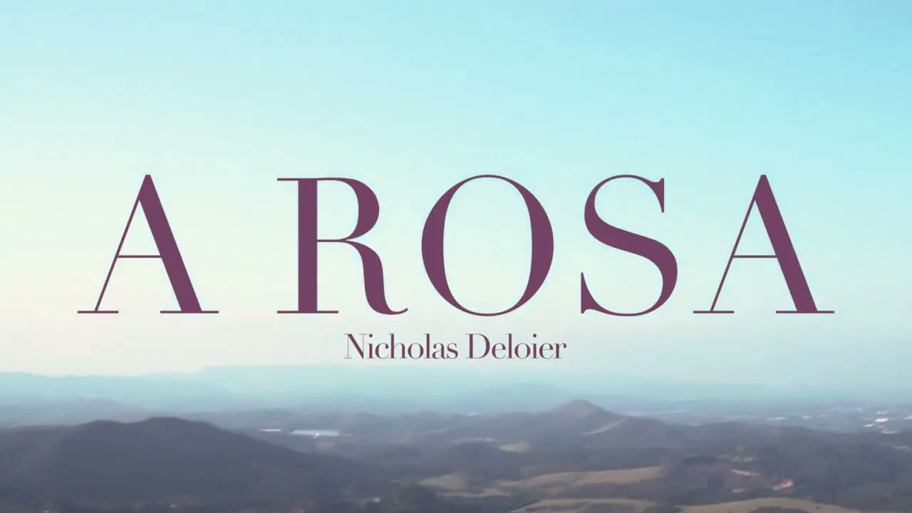

Videoclipe · 2025
A Rosa

O projeto
Um amor romântico atravessado por admiração e delicadeza. O videoclipe aproxima a narrativa audiovisual da essência da música.
Minha participação
Conduzi a direção, o roteiro, a produção e a edição, articulando as etapas de construção da narrativa e da linguagem visual.
Música e interpretação: Nicholas Deloier.
Abril a junho de 2025